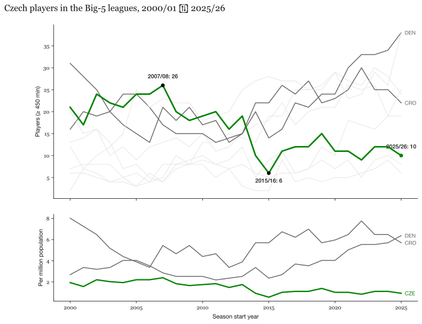
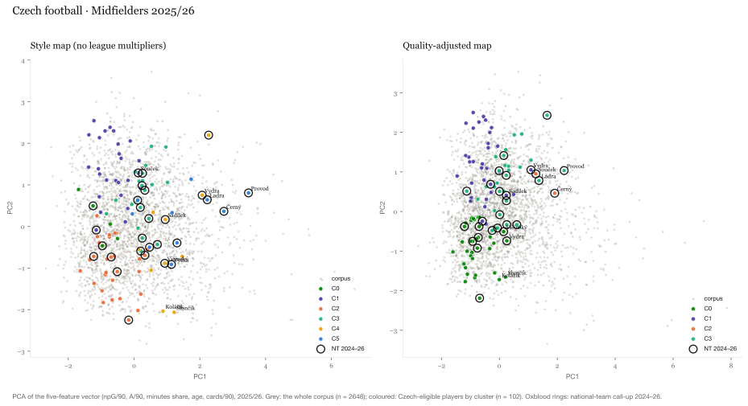

Tool · Player Pool Atlas · Czech footballers in Europe, 1995/96–2025/26
Player Pool Atlas, football: Czech players in Europe's strongest leagues
A descriptive, exploratory atlas of a nation's players in Europe's strongest leagues against eight peers: Czechia ranks seventh of nine per head, and alone among small peers its Big-5 count fell without recovering.
- players per million, nine strongest leagues, 2025/26
- 2.39 26 players · seventh of nine · administrative count
- Czech players in the Big-5, ≥ 450 min
- 26 → 6 → 10 2007/08 · 2015/16 · 2025/26 · administrative count
- own under-21 share of Czech First League minutes, 2025/26
- 6.4 % Denmark 15.3 % · administrative count
- most probable season of the Big-5 fall
- 2014/15 posterior probability 0.56 · level ×0.60, 90 % HDI 0.39–1.03
Overwhelmed? Here's the short version
- The atlas is a public build with six national editions (Czechia, Denmark, England, Germany, Norway, Spain) and a page that sets them side by side; this page documents the Czech edition as its worked example.
- Along the path from a home academy to a strong foreign league, Czechia gives its own under-21s the smallest share of home-league minutes among the eight countries with data, and its players make their first move abroad later than Danes or Norwegians.
- The per-head ranking is robust: Czechia would need nine players more to pass Slovakia, or nine fewer to fall behind Hungary. The dating of the Big-5 fall is less firm, because the interval for its size still includes no change at all.
- Everything here is description. The page does not show why the Czech count fell, that more youth minutes would raise it, or how good the players are, and it gives no selection advice.
Photo: Emessem T · CC BY-SA 4.0, colour held

What the atlas does and comparable work
The atlas asks when Czech presence in Europe's strongest leagues fell and at which stage of the path from a home academy to a foreign top-flight roster Czechia differs from its peers. It answers with counts per head, cohort tables, pathway measures and a map of player profiles, built the same way for six nations and published at football.bsandova.com1. The CIES Football Observatory publishes demographic and migration studies of players and leagues2, and ClubElo and the Opta Power Rankings rate club strength from match results34. The atlas combines a per-nation peer comparison with pathway and squad measures from public data in one reproducible build. It is exploratory and was not pre-registered: the specifications reported here are the ones in the current build, and a superseded one is listed in the change log.
Method
The pool starts from FBref's page of Czech players, 440 professionals, of whom 192 played at least 450 minutes in 2025/26 in one of the nineteen leagues with season tables5. The nine strongest leagues are those ranked 1 to 9 by UEFA association coefficient in 2025: the Premier League, Serie A, La Liga, the Bundesliga, Ligue 1, the Eredivisie, the Primeira Liga, the Belgian Pro League and the Süper Lig6. The per-head measure counts the distinct players of each nationality, by FBref's nationality column, who played in one of these leagues in 2025/26, and divides by Eurostat population7. The long series counts players with at least 450 minutes in the Big-5, the first five of the nine, in every season since 1995/96, for Czechia and sixteen other countries. A local-level model with two step changes at unknown seasons, fitted in PyMC, dates its breaks.
For the map, every player-season is a vector of five features available in all nineteen leagues: non-penalty goals and assists per 90, share of club minutes, age and cards per 90. Rates are shrunk towards the league-season median with a fixed prior of \(K = 10\) matches, \(\hat r = (\text{events} + K\cdot 90\,\tilde r)/(\text{minutes} + K\cdot 90)\), so that at the 450-minute floor the median carries 67 % of the weight and at 900 minutes half. The vectors are reduced with PCA and clustered with K-means, once on raw rates and once after multiplying by a league factor: the UEFA coefficient normalised to the Premier League (Serie A 0.856, Bundesliga 0.788, Czech First League 0.434, Slovak Super Liga 0.217), with second tiers at 0.6 of their first tier by assumption1. A second, independent strength estimate comes from a hierarchical Poisson model of goals plus assists per 90 fitted only on the 2 125 players seen in at least two leagues (8 108 player-seasons, seven seasons), because only a mover's own before and after separates his level from a league's scoring environment.
Worked example: the Czech edition
Czechia has 26 players in the nine leagues, 2.39 per million, seventh of nine peers. Denmark, with about half the population, has five times the density. Czechia would need 35 players to pass Slovakia and would fall behind Hungary only at 17. With a 450-minute floor, Czechia has 23 players (2.11 per million) and the order of the nine is unchanged1.
By cohort the largest gap is among midfielders aged 23 to 25, two Czech players in the nine leagues against a peer median of six, and among defenders under 22 Czechia has none against a peer median of 1.5.
| group | cohort | CZE | peer median |
|---|---|---|---|
| Midfielders | 23–25 | 2 | 6 |
| Midfielders | 26–29 | 3 | 6 |
| Midfielders | 30+ | 1 | 3.5 |
| Defenders | 26–29 | 3 | 4.5 |
| Defenders | U22 | 0 | 1.5 |
Czech players aged 21 or younger get 6.4 % of Czech First League minutes; the same share for each country's own young players in its league is 15.3 % in Denmark, 14.1 % in Hungary, 14.0 % in Croatia and 11.5 % in Norway, and the league has 1.1 regular under-21 starters per club against Denmark's 2.5. The Czech share was 10 % in 2020/21. The first move abroad comes at a median age of 24, against 23 for Denmark and 22.5 for Norway, and the covered seasons hold 32 Czech first moves against Denmark's 112. Of the 192 mapped players, 27 play abroad, 17 of them (63 %) in the nine leagues, and 19 % moved to a league no stronger than the Czech one by its multiplier. The 17 and the 26 above count different things: the 26 include three players under 450 minutes and four goalkeepers, whom the map leaves out, and two players whose longest 2025/26 spell was in the Czech league. Abroad, Czech players keep a median 50 % of their club's minutes, third of nine behind Slovakia (76 %) and Hungary (57 %). Of the 26 players in the Czech squad for the 2026 FIFA World Cup, 35 % play in the nine leagues, against 88 % for Switzerland, 73 % for Croatia, 69 % for Austria and 65 % for Norway18.
The Big-5 series peaks at 26 in 2007/08, falls to 6 in 2015/16 and stands at 10 in 2025/26. The two-break model puts a rise in 2000/01 (posterior probability 0.55, level ×1.65, 90 % HDI 0.87–2.46) and a fall in 2014/15 (0.56, ×0.60, 0.39–1.03); the pair together has probability 0.36. The interval for the size of the fall reaches 1, so the model does not exclude an unchanged level. At the 2007/08 peak the Czech Big-5 players had a median age of 28 and in the season of the fall 32, with no debutant arriving. Among the sixteen other countries, Croatia fell in 2003/04 and recovered eleven seasons later and Norway fell in 2004/05 and recovered seventeen seasons later, while every other small peer's later step is a rise15.

The gap to each peer is split into three channels, the under-21 share of home minutes, home-league strength (the mover-based estimate) and the median age of the first move, with a ridge regression across the eight countries, Czechia and seven peers, with data on all three and a linear Oaxaca–Blinder split of the fitted gap. With three channels and eight countries this is an accounting of a correlation1.
| peer | gap | U21 minutes | league strength | age at first move | residual |
|---|---|---|---|---|---|
| Norway | +7.0 | +4.2 (1.2–5.9) | +5.1 (1.9–6.8) | 0.0 | −2.4 |
| Denmark | +10.2 | +7.3 (2.2–10.3) | +1.7 (0.6–2.3) | 0.0 | +1.2 |
Across the same eight countries a Bayesian regression of players per million on the under-21 share gives +10.1 per 10 percentage points (90 % HDI −1.7 to +23.3, R² 0.27), an interval that includes zero. Least squares on the country means gives +10.7 (−3.8 to 20.3). A pooled fit on all sixteen country-seasons gives +7.8 (1.1–14.0), but its bootstrap resamples country-seasons as if independent, with no clustering by country, so that interval is too narrow1.

Tests and measured error
The repository holds 317 software unit tests, and every stochastic step uses seed 429. Each league's UEFA multiplier was perturbed by ±20 % in turn, 38 scenarios; in 34 of them nobody enters or leaves the union of the three position groups' top tens, and in the other four one player does. Refitted on earlier seasons, the mover-based strength model predicts the 863 league changes of 2025/26 better than a UEFA-scaled or an unchanged rate, with log predictive density −2.17 against −2.73 and −2.63 and mean absolute error 0.127 against 0.151 and 0.137; it samples with no divergences and R-hat ≤ 1.003. In a rolling backtest over fifteen seasons the break model misses the next season's Big-5 count by 2.5 players on average against 2.7 for last season's count, and its 90 % interval covers 14 of 15 outcomes. The data-quality log records every decision that changed a count: 92 women's entries dropped from the country page by surname, 2 namesakes separated by club, 125 professionals in leagues without season tables listed by name only, 441 split-season rows merged after transfers, and 18 call-up names that match no row1.
Limits
The counts measure presence, not quality, and they are single-season snapshots. The peer comparisons rest on eight countries, too few for the regression and the gap split to be more than descriptive. The two league-strength estimates disagree in places: they correlate at Spearman 0.74 over eighteen leagues, Hungary's NB I is sixth by the movers and seventeenth by UEFA, and the Czech First League is worth 0.67 of a Premier League season by the movers (90 % HDI 0.59–0.75) against 0.434 by UEFA. ClubElo, planned as a third source, was unreachable at run time. FBref has no Slovak league tables, so Slovakia is missing from the youth-minutes panel. Women's entries are removed by a surname rule that can misclassify. The Czech pool is found through FBref's country page, while peers are counted by the nationality column, so the Czech figures and the peer figures come from slightly different routes.
Install and reproduce
From a clean clone, uv sync && make restore-snapshot && make render rebuilds the report from the committed snapshot without network access, and make test runs the tests9. The live atlas is at football.bsandova.com, and the editions are compared on its Nations page.
References
- Šandová, B. (2026). Player Pool Atlas · football, Czech edition, with editions for Denmark, England, Spain, Germany and Norway, the Nations page and the methodology (multipliers, shrinkage, sensitivity, league strength, break model, youth panel, gap decomposition, data-quality log). football.bsandova.com. Accessed 29 September 2026.
- CIES Football Observatory. Demography and migration studies. football-observatory.com. Accessed 29 September 2026.
- ClubElo. Football Club Elo Ratings. clubelo.com. Accessed 29 September 2026.
- Opta Analyst. Opta Power Rankings. theanalyst.com. Accessed 29 September 2026.
- FBref player season tables (standard, playing time) via soccerdata: the nine strongest leagues, the Czech First League, peer top flights and the German second tier for 2020/21–2025/26; the "Players from Czechia" country page; Big-5 tables 1995/96–2025/26 for the long series. fbref.com. Snapshot committed 14 September 2026 (Big-5 history 22 September 2026).
- UEFA men's association coefficients, five-year ranking 2022/23–2026/27, via Wikipedia. en.wikipedia.org/wiki/UEFA_coefficient. Snapshot committed 14 September 2026.
- Eurostat. Population on 1 January 2024, table
demo_pjan(Czechia 10.90 million). ec.europa.eu/eurostat. Values as used in the atlas configuration, 14 September 2026. - Wikipedia squad tables: 2026 FIFA World Cup squads, 2024–25 UEFA Nations League, 2026 World Cup qualification, UEFA Euro 2024 and the 2025 UEFA European Under-21 Championship, matched on normalised name and birth year. en.wikipedia.org/wiki/2026_FIFA_World_Cup_squads. Snapshot committed 14 September 2026.
- Šandová, B. (2026). czefootball-player-pool-atlas, v0.1.0. Software, github.com/sandovabarbora/czefootball-player-pool-atlas, commit
e449f1e, MIT. PyMC 5.
Change log
- 14 September 2026: first published as "When did the train leave, and who else missed it".
- 29 September 2026, version 2: reframed as a tool page (exploratory, not pre-registered) and retitled. The nine strongest leagues are now listed with their UEFA ranking year. Correction: the per-head measure was described as counting players with at least 450 minutes, but the atlas counts every player who appeared in 2025/26; the numbers are unchanged, and a check with the 450-minute floor (Czechia 23 players, 2.11 per million, same order) and the swing needed to change Czechia's rank (35 or 17 players) were added. The 26 per-head players and the 17 of 27 mapped players abroad are now reconciled. The page reports one break model, the two-break model the atlas now runs, with the 90 % interval of each step, and the rise is given as ×1.65 (1.648 in the atlas output) instead of ×1.66; the superseded one-step results (2014/15 at 62 %, ×0.57 (0.38–0.86), backtest error 2.8 against 2.7, coverage 0.87, forecast 11 (5–18) for 2026/27) were removed, and the backtest is reported from the current model (2.5 against 2.7, 14 of 15 covered). A sentence that called the Big-5 series "the top-9 leagues" was removed. The gap split is reported once, as a table with all three channels, the residual and bootstrap intervals; Denmark's youth-minutes contribution is corrected from +7.4 to +7.3 (7.35 in the atlas output), and the shares (73 %, 72 %) were dropped because the channels do not sum to the gap. The pooled least-squares interval is now described as unclustered, and the fit on country means (+10.7, −3.8 to 20.3) was added. Removed as policy advice drawn from descriptive data: the paragraph on what is "within reach" and the reading of the German and English academy reforms as a "lever", with their figures (5 % to 11 % by 2009/10, 3 % to 6 % by 2019/20). Also removed: the six-season changes in Big-5 presence for Norway, Denmark and Czechia (+2.7, +2.3, −0.1 per million), the model comparison (RMSE 0.0706, 0.0713, 0.0754; 91.6 % coverage; 8 850 test pairs), the paragraph on the other editions' pool sizes (443, 511, 1 047, 932), the build-process paragraph (23 rulings) and the 17-card count. The 317 tests are labelled as software tests. The fig. 1 caption now names the rendered colours and says the render starts in 2000/01. References renumbered, merged (the FBref Big-5 tables join the FBref entry) and given access or snapshot dates; related work added. Seasons written as 2014/15 throughout. The sensitivity check is reported over the 38 single-league perturbations (34 without change, four with one player) instead of 41 scenarios (37), which counted the unperturbed baseline and the two uniform-scaling runs that cannot change a ranking. The youth-minutes share is described as each country's own under-21 players, as the atlas computes it, and the eight-country regressions no longer call Czechia a peer.
- Checked against editorial standard v1 on 29 September 2026.